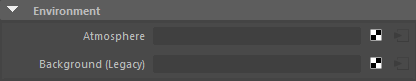
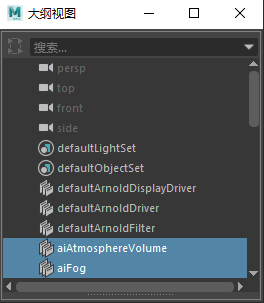

环境
 请参见《Arnold 用户手册》中的渲染设置
请参见《Arnold 用户手册》中的渲染设置

此设置用于控制大气（fog 或 atmosphere_volume）。您可以选择“无”(None)*（无大气效果）、fog* 或 atmosphere_volume*。如果选择 *fog 或 atmosphere_volume， 属性编辑器将显示每个节点的控件。通过切换到“仅显示 DAG 对象”(Show Dag Objects Only)*，也可以在大纲视图中找到 *aiFog 和 aiAtmosphereVolume 节点。

在大纲视图中选择 fog_and_atmosphere_volume （“仅显示 DAG 对象”(Show Dag Objects Only)）。